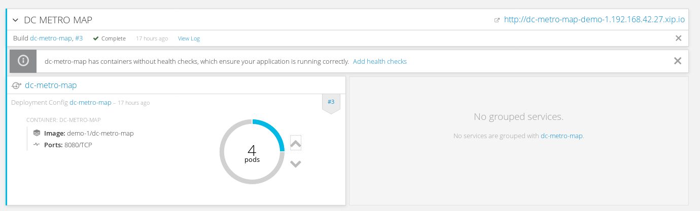
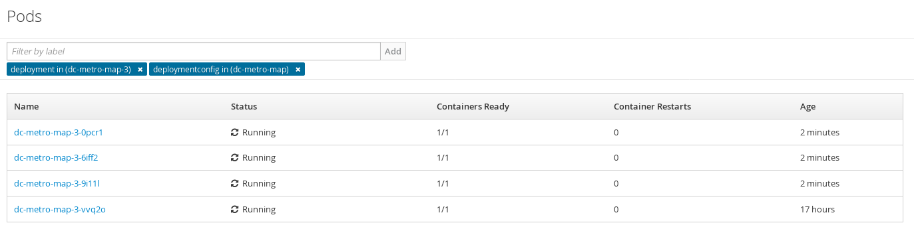
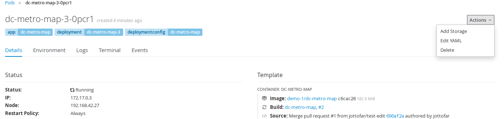
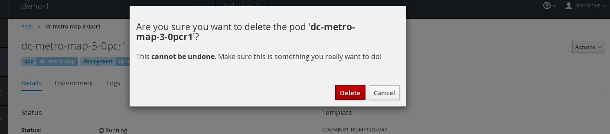
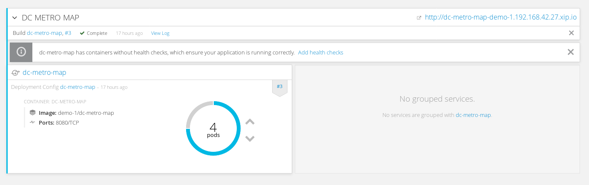
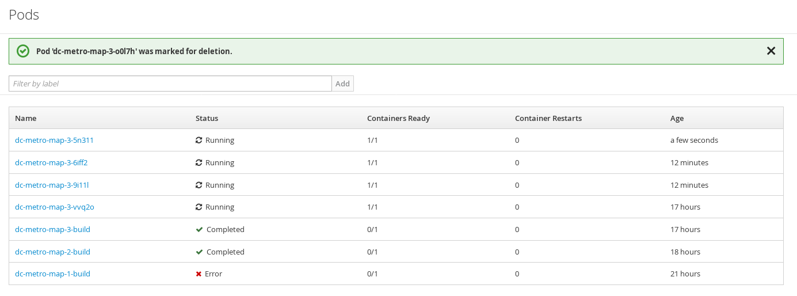
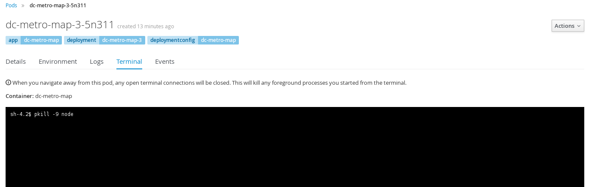
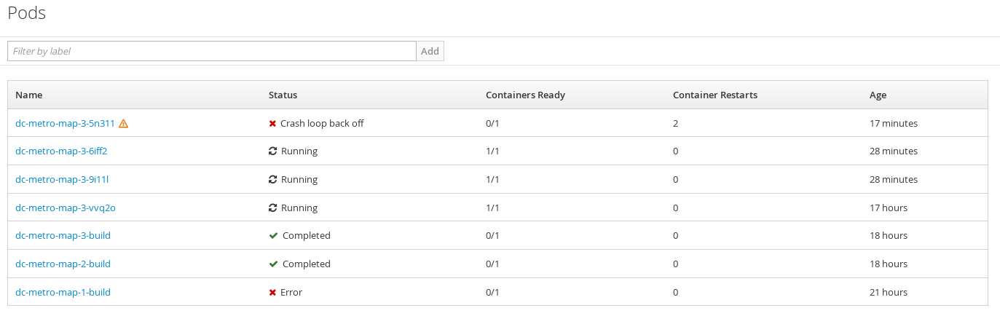

Things will go wrong with your software, or your hardware, or from something out of your control. But we can plan for that failure, and planning for it let's us minimize the impact. OpenShift supports this via what we call replication and recovery.
Let's walk through a simple example of how the replication controller can keep your deployment at a desired state. Assuming you still have the dc-metro-map project running we can manually scale up our replicas to handle increased user load.
Goto the terminal and try the following:
$ oc scale --replicas=4 dc/dc-metro-map
Check out the new pods:
$ oc get pods
Notice that you now have 4 unique pods availble to inspect. If you want go ahead and inspect them, using 'oc describe pod/
Click "Overview"
In the deployment, click the up arrow 3 times.The deployment should indicate that it is scaling to 4 pods, and eventually you will have 4 running pods. Keep in mind that each pod has it's own container which is an identical deployment of the webapp. OpenShift is now (by default) round robin load-balancing traffic to each pod. 
Hover over the pod counter (the circle) and clickNotice that you now have 4 unique webapp pods available to inspect. If you want go ahead and inspect them you can see that each have their own IP address and logs. 
So you've told OpenShift that you'd like to maintain 4 running, load-balanced, instances of our web app.
Okay, now that we have a slightly more interesting replication state, we can test a service outages scenario. In this scenario, the dc-metro-map replication controller will ensure that other pods are created to replace those that become unhealthy. Let's force inflict an issue and see how OpenShift reponds.
Choose a random pod and delete it:
$ oc get pods
$ oc delete pod/PODNAME
$ oc get pods -w
If you're fast enough you'll see the pod you deleted go "Terminating" and you'll also see a new pod immediately get created and transition from "Pending" to "Running". If you weren't fast enough you can see that your old pod is gone and a new pod is in the list with an age of only a few seconds.
You can see the more details about your replication controller with:
$ oc describe rc
From the browse pods list:
Click one of the running pods (not a build pod)
Click the "Actions" button in the top right and then select "Delete"
Now click the "Delete" button in the popup to confirm the pod deletion
Quickly switch back to the Overview
If you're fast enough you'll see the pod you deleted unfill a portion of the deployment circle, and then a new pod fill it back up.

You can browse the pods list again to see the old pod was deleted and a new pod with an age of "a few seconds" has been created to replace it.

In addition to the health of your application's pods, OpenShift will watch the containers inside those pods. Let's force inflict some issues and see how OpenShift reponds.
Choose a running pod and shell into it:
$ oc get pods
$ oc exec PODNAME -it /bin/bash
You are now executing a bash shell running in the container of the pod. Let's kill our webapp and see what happens.
If we had multiple containers in the pod we could use "-c CONTAINER_NAME" to select the right one
Choose a running pod and shell into its container:
$ pkill -9 node
This will kick you out off the container with an error like "Error executing command in container"
Do it again - shell in and execute the same command to kill node
Watch for the container restart
$ oc get pods -w
If a container dies multiple times quickly, OpenShift is going to put the pod in a CrashBackOff state. This ensures the system doesn't waste resources trying to restart containers that are continuously crashing.
Navigate to browse the pods list, and click on a running pod
In the tab bar for this pod, click on "Terminal"
Click inside the terminal view and type $ pkill -9 node
Click the refresh button (on the terminal) and do that a couple more times
Go back to the pods list

The container died multiple times so quickly that OpenShift is going to put the pod in a CrashBackOff state. This ensures the system doesn't waste resources trying to restart containers that are continuously crashing.
Let's scale back down to 1 replica. If you are using the web console just click the down arrow from the Overview page. If you are using the command line use the "oc scale" command.
In this lab we learned about replication controllers and how they can be used to scale your applications and services. We also tried to break a few things and saw how OpenShift responded to heal the system and keep it running. This topic can get deeper than we've experimented with here, but getting deeper into application health and recovery is an advanced topic. If you're interested you can read more about it in the documentation here, here, and here.